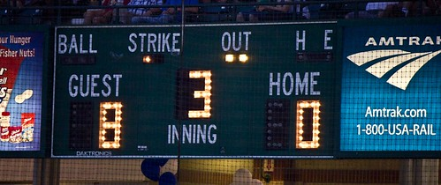

Two 11-player teams play the game on a turf or synthetic field measuring 100 yards long and 53 yards wide. White lines cross the field at 10-yard intervals, starting from zero at each end with the 50-yard line marked at mid-field. Smaller white hash marks at 1-yard intervals help the players, officials and fans gauge a team's progress more precisely. Beyond each goal line is an end zone 10 yards deep. That's where the points pile up. Each team defends its own end zone. When the offensive team, which has the ball, can fight through the defenders and take the ball into its opponent's end zone, it scores points
In football, the highest score wins. A touchdown scores six points when the offensive team carries the ball into the end zone or catches it there or intercepts a pass or recovers a fumbled ball. A touchdown earns an attempt to score one or two extra points. A football kicked through the goal posts wins one point. A run or catch in the end zone wins two. The play starts at the defense's 2-yard line. Field goals score three points for the offensive team if they cannot fight their way to the defender's end zone. The offensive place kicker must kick the football between the goal posts from anywhere on the field for this score, though successful attempts from beyond the 45-yard line are rare. The defense can score two points on a safety when the offensive ball carrier is caught behind his goal line and tackled by the defense to stop the play.
Regulation time for a football game is one hour, divided into four 15-minute quarters. A halftime between quarters two and three allows 12 minutes for each team to convene off-field to discuss strategy. Between the other quarters, the teams have two minutes to switch the end zones they defend. Each half of the game begins with the defensive team's kickoff, delivering the ball to the offensive side.
Football is played by some of the most powerful athletes in sports, sometimes topping 300 lbs., who often hurl themselves at each other at full speed. Without rules the game could become a spectacle of injuries and unfair advantages. The NFL and NCAA promote extensive and continually evolving rules regulating protective uniform and equipment standards, legal tackling and blocking practices, standards of sportsmanlike conduct and fair scoring. Fans want to see intense competition but appreciate the rules that make the sport fair and protect the players to play another day.
